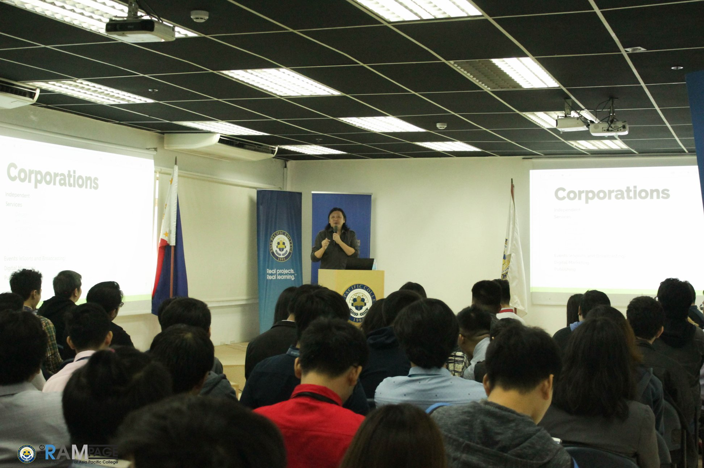

During SoCIT fest, I had a mixed bag of emotions since midterms was around the corner and I don't know if I'll go lax and enjoy myself or be in a constant panic and despair
since I haven't studied for every subject I had, but then again, my stupidity came over and I enjoyed every single thing of what SoCIT fest has to offer, then cram everything to the last minute
during the weekends.
| Images of SoCIT fest |
| Seminar about AIoT, IoT, and Mixed Reality |
.jpg) |
| Tekken tournament |
.jpg) |
| Seminar about game develpment |
 |